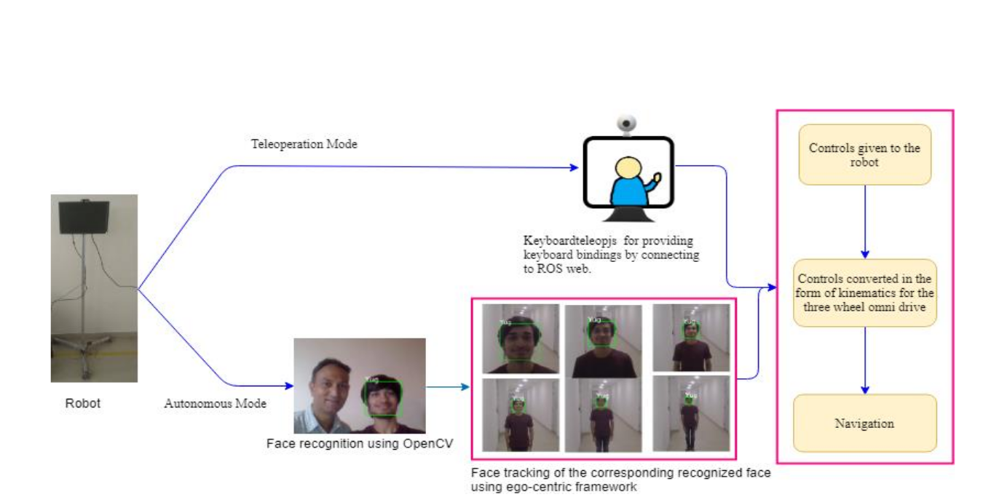
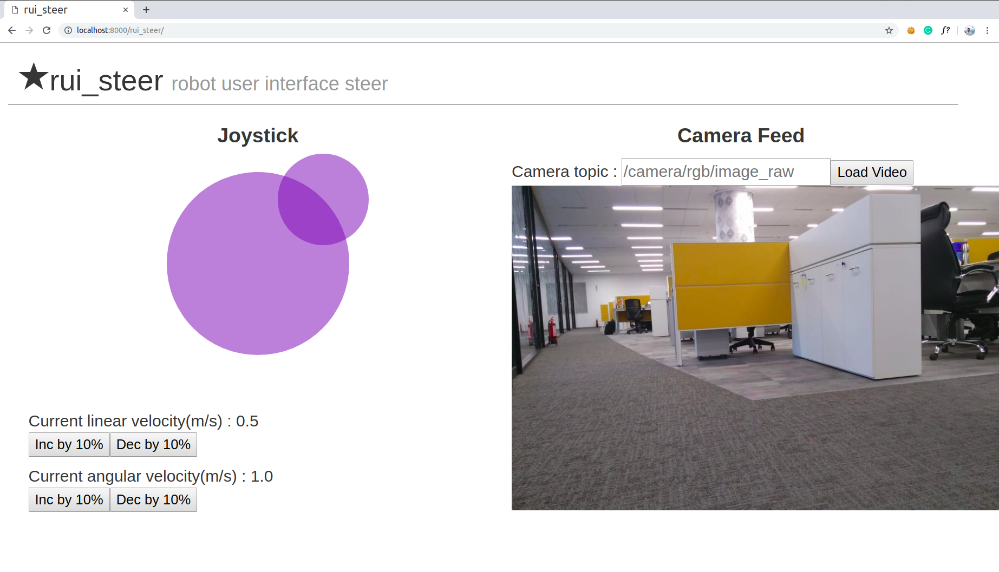
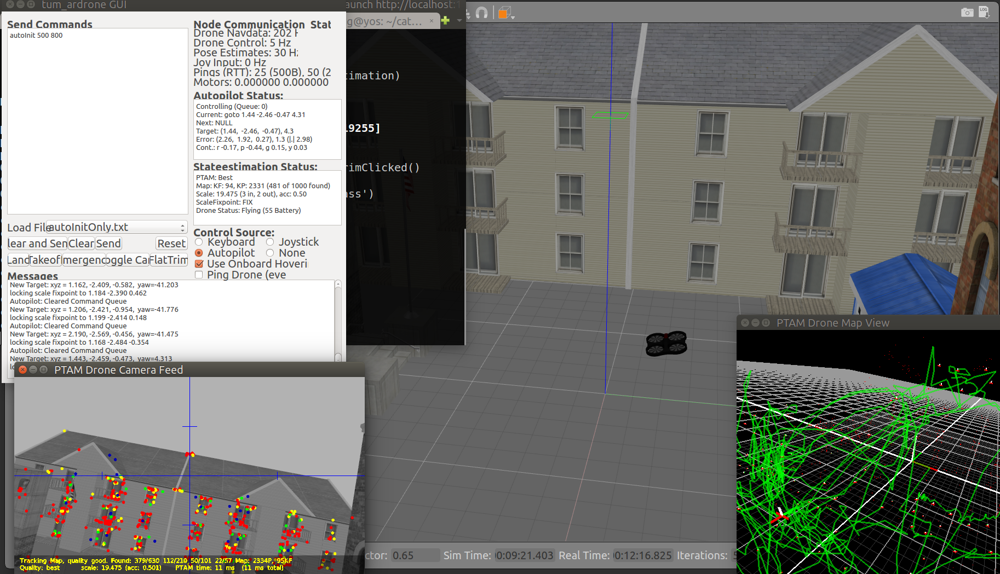
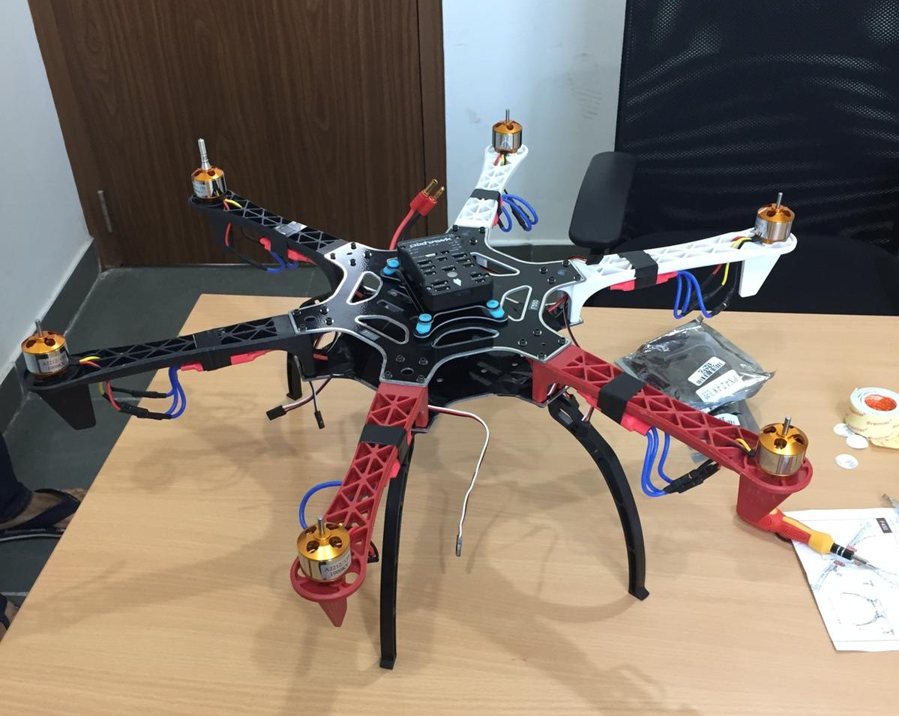
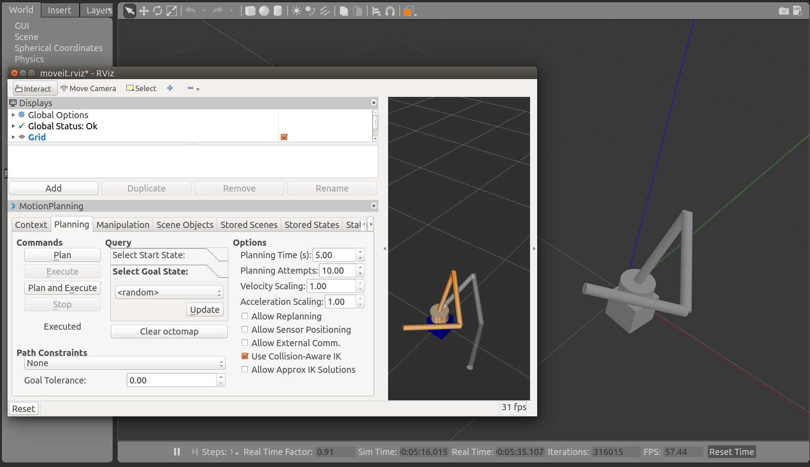
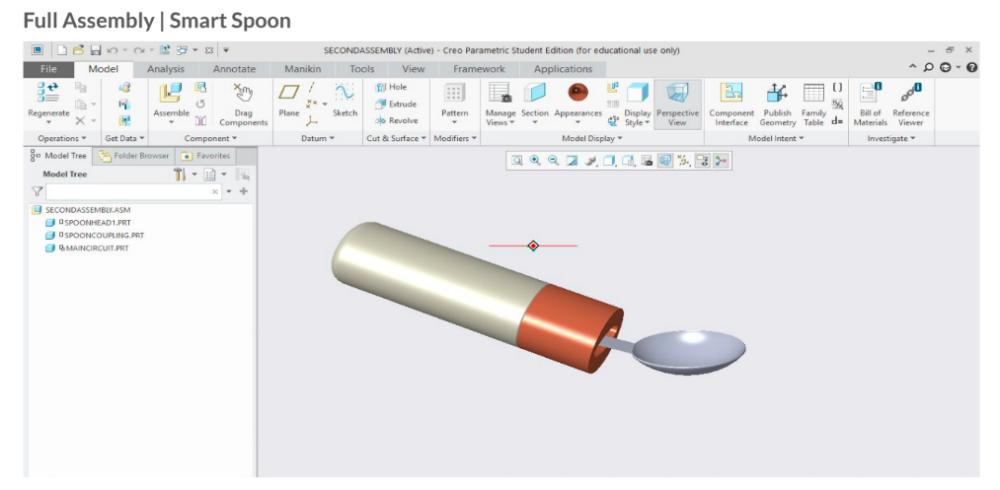

Projects
Telepresence Robot
Worked under Dr. Arshad Javed for the development of a three-wheel omni-drive telepresence robot. The autonomous control is achieved by recognizing the person to be tracked bi-directionally through an ego-centric framework.


Robot User Interface
It is a suite of remote driving tools. Employed utilties such as robot web tools, roslibjs, rosbridge and roswww to create web interfaces that allow users to teleoperate as well as autonomously navigate mobile robots in unknown environments.
teleop_keyboard_omni3
A Generic keyboard teleop for three-wheeled omnidirectional robots. Performed motion analysis of three-wheeled robots and extended the results to develop the control algorithm. This package has been added to ROS package index. The code was initially tested on a Gazebo simulation and then extended to an actual robot.


Autonomous navigation of differential drive robots
Implemented ROS Navigation stack on a Gazebo simulation of a differential driven car. SLAM algorithm is used for mapping and creating local and global cost maps. Used Dijkstra's algorithm for path planning and the robot localization is carried out using Monte Carlo localization algorithm.
Aerial Robotics
Visual navigation for quadrotor
Implemented Monocular SLAM using PTAM (Parallel Tracking and Mapping) on a Gazebo simulation of a quadrotor.


Autonomous control of Drone using on-board micro-controller
Currently working under Dr.Paresh Saxena to build a Hexarotor based on Raspberry Pi equipped with RGB-D camera. The autonomous behavior will be implemented onboard using the ROS framework.
Industrial Robotics
Robotic Arm
Created a custom URDF model of a manipulator robot in Gazebo and performed motion planning using MoveIt and python scripts.

Medical Robotics
Smart Spoon
Fabrication of Low-cost spoon for people with hand tremors.This project is being done under Dr.Sujith R. and Dr.Amrita Priyadarshini. The PID control algorithm will be used to keep the spoon stable and the body will be 3D printed.

Arduino Projects
Humanoid Robot
This project deals with the development of a simple 8 DOF Biped Humanoid robot. Designed the robot on Solidworks and wrote the walking algorithm.


Voice Controlled Car
February 2018
A robot that can be controlled using specific voice commands. Speech-to-Text is used to convert voice commands to text that are then sent to Arduino through Bluetooth communication. It is the most viewed project with 30K+ views on Arudino.cc.